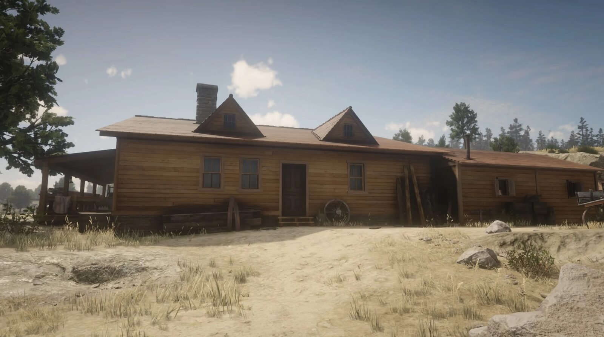
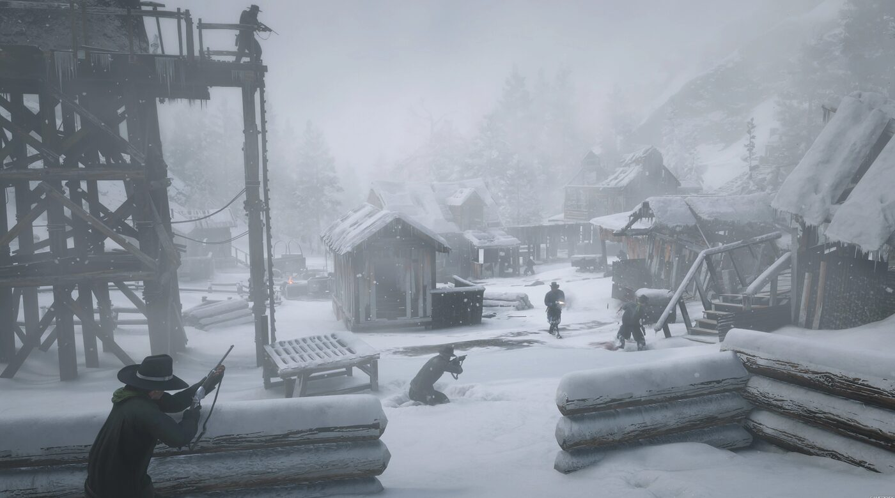
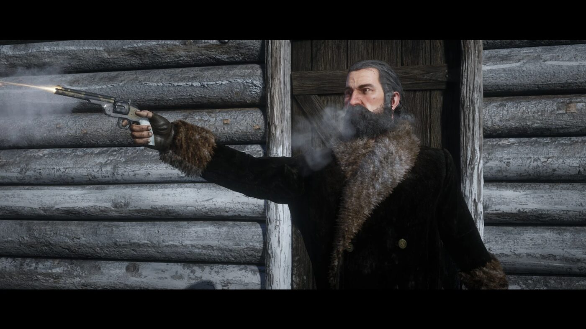

Guide de l'histoire · Red Dead Redemption 2 Épilogue partie 2 : Beecher's Hope Red Dead Redemption 2 Épilogue partie 2 sur 2 Beecher's Hope 1907 Par Joseph Lambert · Mis à jour le 24 juillet 2026  Beecher's Hope, le ranch que John bâtit, et le foyer qu'il défend dans Red Dead Redemption. La partie 2 est la dernière de Red Dead Redemption 2. John Marston bâtit le ranch de Beecher's Hope avec Uncle et un Charles Smith de retour, rembourse sa dette bancaire grâce à la chasse aux primes avec Sadie Adler, et traque Micah Bell. Elle se termine en posant les bases du premier Red Dead Redemption. Cette page dévoile la fin de Red Dead Redemption 2. Le décor : Beecher's Hope Beecher's Hope se trouve dans les Great Plains, à West Elizabeth. C'est le camp de base de la partie 2, avec des allers-retours vers Blackwater, la Lemoyne, Tall Trees et Rhodes. John doit de l'argent à la banque de Blackwater pour la terre, et cette dette est le moteur des missions rémunérées du chapitre. Seuls les paiements liés aux missions la font baisser. Les missions de la partie 2 La partie 2 compte douze missions principales, avec le personnage qui confie chacune, suivies d'une séquence de générique. Comme dans la partie 1, l'ordre peut varier. Bare Knuckle Friendships · Uncle An Honest Day's Labors · Sadie Adler Home Improvement for Beginners · Uncle The Tool Box · Albert Cakes A New Jerusalem · Uncle A Quick Favor for an Old Friend · Uncle Uncle's Bad Day · Uncle The Best of Women · Abigail Marston Trying Again · Jack Marston A Really Big Bastard · Abigail Marston et Sadie Adler A New Future Imagined · Abigail Roberts American Venom · Abigail Roberts et Sadie Adler La construction du ranch Charles Smith réapparaît dans Bare Knuckle Friendships, lors d'un combat à mains nues à Saint-Denis. Vient ensuite la construction : John achète du bois dans The Tool Box, et dans A New Jerusalem il monte la maison du ranch avec Charles pendant qu'Uncle supervise. La grange est achetée préfabriquée et installée à part dans A Quick Favor for an Old Friend. La chasse aux primes avec Sadie, comme dans An Honest Day's Labors, rembourse la dette bancaire.  Le Mont Hagen, où s'achève la traque de Micah Bell. La famille réunie Une fois la maison achevée, Abigail et Jack y emménagent dans The Best of Women. Dans A New Future Imagined, John demande Abigail en mariage à Blackwater. C'est la dernière mission avant le final. American Venom : la traque de Micah La dernière mission s'appelle American Venom. Sadie apprend que Cleet, un homme de Micah, boit à Strawberry et sait où se trouve Micah. John, Sadie et Charles attrapent Cleet et lui arrachent la position : Micah est au Mont Hagen, dans les Grizzlies. Cleet est pendu, ou abattu par Sadie si John l'épargne. Sur la montagne, Charles est touché à l'épaule et Sadie poignardée. Tous deux survivent. John poursuit seul. Il rejoint Micah, et Sadie le prend à revers et le tient en joue. C'est alors que Dutch van der Linde sort de la cabane, armes au poing. Sadie hésite, et Micah la prend en otage.  Dutch tire le premier sur Micah, puis s'en va sans un mot. John supplie Dutch. Dutch tire une balle dans la poitrine de Micah, rengaine, et s'en va sans un mot. Blessé, Micah cherche son revolver, et John l'abat dans la neige. La mise à mort est partagée : Dutch tire le premier, John achève. John et Sadie trouvent ensuite un magot d'argent et d'or caché dans la cabane. Le jeu ne dit pas d'où il vient à l'écran ; on l'attribue le plus souvent à l'argent du gang volé lors du braquage du ferry de Blackwater, en 1899. La fin : Edgar Ross Le générique se déroule sous forme de cinématiques. Deux agents du Bureau of Investigation, Edgar Ross et Archer Fordham, enquêtent sur la mort de Micah et retrouvent son corps au Mont Hagen. Ils remontent la piste jusqu'à Beecher's Hope. Dans la dernière de ces scènes, ils observent John et Jack à la jumelle, à distance, puis font demi-tour. Cette surveillance prépare le premier Red Dead Redemption. Elle établit que le Bureau a identifié John, le moyen de pression qu'il utilisera contre lui en 1911. Sadie part pour l'Amérique du Sud, Charles pour le Canada. C'est la fin de Red Dead Redemption 2. Les événements clés de la partie 2 Charles Smith revient et aide John à bâtir la maison du ranch de Beecher's Hope. John rembourse sa dette envers la banque de Blackwater grâce à la chasse aux primes avec Sadie Adler. Abigail et Jack emménagent dans la maison achevée ; John demande Abigail en mariage. Dans American Venom, John, Sadie et Charles traquent Micah jusqu'au Mont Hagen. Dutch apparaît, tire le premier sur Micah, puis s'en va ; John achève Micah. John et Sadie récupèrent un magot d'argent et d'or dans la cabane de Micah. Les agents Edgar Ross et Archer Fordham placent John sous surveillance, ce qui amène Red Dead Redemption. PrécédentÉpilogue I : Pronghorn Ranch Guide de l'histoireTous les chapitres